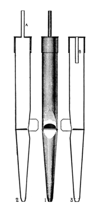

|
Chimney Flute English Flauto Camino Italian Flûte à Cheminée French |
Roerfluit Dutch Rohr Flute German/English Rohrflöt[e] German |
|
Espigueta Spanish Flauto a Camino Italian Rorflojte Danish, Finnish |
Rohrschelle German |
The names Rohrflöte and Chimney Flute are often used to refer to a whole class of flute stops whose pipes feature various kinds of tubes or �chimneys� in their tops. This important pipe form, known as �half-stopped�, has been known for centuries throughout Europe, and probably originated, according to Grove and Williams, in the Rhineland at the end of the 15th century. While Audsley claims that it was �systematically neglected� by French, English and American builders, the pipe form was well known to French builders, and Hopkins & Rimbault maintain that in England half-stopped pipes were far more common than fully stopped pipes. Bonavia-Hunt reports that early English builders were very fond of it, particularly Snetzler.
While this pipe form has been used extensively, stop labels often do not mention its use. The name Rohrflöte and its variants were, according to Grove, originally used only north of a line drawn between Breslau and Antwerp. English Stopped Diapasons often had chimneys, as did French Bourdons and Flûtes. While the name Flûte à Cheminée was mentioned by Dom Bedos around 1770, it does not seem to have been used with any frequency until a century later. Williams reports that early Dutch Hohlflöten also used this construction.
Some writers have suggested that the name Rohrflöte, which may be translated as �reed flute�, implied a reedy tone, but this is not the case; the name derives from its physical form. The names Flauto Camino and Flûte à Cheminée translate literally to �chimney flute�. Similarly, the name Espigueta refers to something narrow such as a dowel, peg or spigot. The name Rohrschelle derives from the word schelle, meaning �little bell�; according to Adlung this name was used because of the bright quint component of the stop's tone.
This stop has been made at a wide variety of pitches, from 16' to 1', including quint pitches. The most common pitches by far are 8' and 4'.
The Rohrflöte may be made of wood or metal. When of wood, the pipes are essentially stopped flutes with holes bored through the stoppers. A similar construction may be used with metal pipes; that is, with bored wooden stoppers. More commonly, the metal pipes have caps, each cap being pierced with a hole to which a metal tube is soldered. The tube, or chimney, may extend upward above the main body of the pipe, or it may extend downward into the body of the pipe, as shown in Audsley's drawing reproduced here. Placing the chimney inside the body protects it from injury; Audsley claims that, all other things being equal, the tone is not affected by placing the chimney inside or outside, but Sumner maintains that the finest characteristic tone of the Rohrflöte comes from external metal chimneys.
Stopped pipes produce only odd harmonics; the addition of a chimney adds some even harmonics to the tone. The length and diameter of the chimney has varied considerably from builder to builder and from period to period. Wider chimneys add more even harmonics and make the tone brighter. According to Maclean, modern German builders distinguish between the following stops:
Rohrflote wide scale, short narrow chimney Rohrgedeckt wide scale, long narrow chimney Rohrquintade narrow scale, short narrow chimney Rohrpfeife narrow scale, long wide chimney
Audsley recommends a chimney diameter between 1/6 and 1/3 the body diameter, with a chimney length of 1/4 to 1/2 the body length. For the cFlûte à Cheminée, Mersenne recommends chimneys as short as half the circumference of the body, and for the Flûte d'Allemagne, twice the circumference.
The pipes of metal Rohrflöten are sometimes tuned through the use of sliding caps, and sometimes by use of large ears. Some consider ear tuning to be more stable, because caps are affected by gravity. Chimneys are usually omitted below tenor (4') C, below which normal stopped pipes are used. The scale of the Rohrflöte is usually large. Audsley recommends a scale of 2.62" at tenor C, in a ratio of 1:2.66.
The tone of the Rohrflöte is often described as �liquid�. Audsley reports that it contains inharmonic upper partials, and Wedgwood attributes to Dr. Robert Gerhardt the discovery that the vibrations resulting from the two spaces in the pipe (the body and the chimney) give rise to such inharmonic partials.
Ernest M. Skinner apparently did not think much of this stop. He called it, incorrectly, �a metal equivalent of the Gedackt�, and considered it �less satisfactory on account of an uncertain speech in the tenor octave, due to the chimneys which act as leaky bungs in stopped wood pipes. This octave has an asthmatic breathy quality ... [and] lacks firmness and has a tendency to windiness�. Nevertheless, the stop appears in fully half of his instruments listed in Osiris.
Compare with Lochgedeckt. Above: Rohrflöte 8'; St. Paul's Catholic Church, Danville, Illinois, USA; Schneider opus XXV. Photographs by Ed Stauff, courtesy of Schneider Pipe Organ Co. Click on them for a larger image.Osiris contains over 450 examples of Rohrflöte, about 150 examples each of Chimney Flute and Flûte à Cheminée, about 160 examples of Rohr Flute, 75 examples of Roerfluit, 13 examples of Flauto Camino, nine exampes of Rorflojte, two examples each of Rohrschelle and Espigueta, and one example of Flauto a Camino.
Roerfluit 8', Werk; Oosthuizen, Netherlands; unknown c1521.
Rohrflöte 8', Hauptwerk; Abbey, Muri, Switzerland; Schott 1630.
Flute a cheminee 4', Great; BPOE Lodge, Adams, Massachusetts, USA; Steere & Turner 1872.
Chimney Flute 8', Choir; Parish Church, Hillsborough, County Down, Northern Ireland; Snetzler 1773.
Flauto a Camino 8', Positiv; Cathedral, Passau, Bavaria, Germany; Steinmeyer 1924.
Espigueta 8', Organo Mayor; Chamber Hall, Auditorio Nacional, Madrid, Spain; Blancafort 1991.
Espigueta 4', Teclado; Mission San José, Fremont, California, USA; Rosales 1990.
Rohrschelle 2', Pedal; Suntory Hall, Tokyo, Japan; Rieger 1986.
Rohrschelle 2', Pedal; Cathedral, Magdeburg, Germany; Schuke 1969-70.
Rorflojte 4', Brustwerk; St. Nicholas, Aabenraa, Denmark; Marcussen 1957.
See the Sound Files appendix for general information.
| Rohr Fleute 8', Hauptwerk | Reinhardtsgrimma, Sachsen, Germany | Silbermann, 1731 | arpeggio | St. Anne |
| Rohr Fleute 4', Hinterwerk | Reinhardtsgrimma, Sachsen, Germany | Silbermann, 1731 | arpeggio | St. Anne |
| Rohrflöte 8', Swell | St. Anne's Church, Moseley, Birmingham, England | Brindley & Foster, 1907 | arpeggio | St. Anne |
| Rohrflute 8', Swell | Kellogg Auditorium, Battle Creek, Michigan, USA | Aeolian-Skinner, 1933 | St. Anne | |
| Rohrflute 8', Swell | First Baptist Church, Riverside, California, USA | Schantz, 1966 | arpeggio | St. Anne |
| Rohrflute 16', Great (Swell ext.) | First Baptist Church, Riverside, California, USA | Schantz, 1966 | arpeggio | |
| Rohrflöte 4' | Chamber Organ | Dieter Ott, 2003 | arpeggio | St. Anne |
|
Original website compiled by Edward L. Stauff. For educational use only. Rohrflote.html - Last updated 17 May 2008. |
Home Full Index |
{kind=link}
{kind=link}